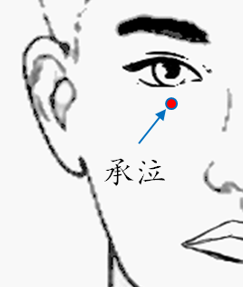

【穴位名稱】: 承泣 (ST1)

【治療症狀】: 麥粒腫(針眼) 近視
【取穴位置】: 面部，瞳孔直下眼球與眶下緣之間凹陷處。當目中線上，下瞼溝正中。《針灸甲乙經》：「在目下七分，直目瞳子」；《外台秘要》：「甄權云：在眼下八分」；《醫宗金鑑》：「目下胞陷中」。
【針刺方法】: 闔眼，用平直細針在眼球與眶下緣間進針，沿眶壁內緣緩緩刺入0.5~1吋，進針前可先囑病人將眼球下轉，使眼球後組織偏轉至上方，以免被刺傷。針刺時不宜多作捻轉或提插手法，留針時間也不可過久。出針後應輕輕按揉針孔片刻，以防出血。不宜用灸法。